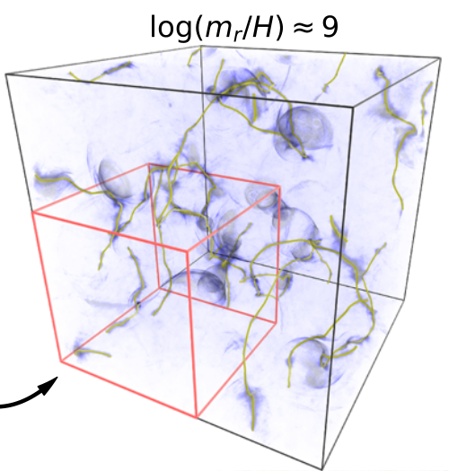

Publications
Publication Links
26. ERF: Energy Research and Forecasting Model
- A. Lattanzi, A. Almgren, E. Quon, M. Natarajan, B. Kosovic, J. Mirocha, B. Perry, D. Wiersema, D. Willcox, X. Yuan, W. Zhang
- 2024, arXiv:2412.04395
- doi.org/10.48550/arXiv.2412.04395
- Shown: Simulated three-dimensional rainstorm supercell showing cloud water (white), rain water (red), and accumulated rainfall (bottom).

25. Code Generation for AMReX with Applications to Numerical Relativity
- A. J. Peterson, D. Willcox, and P. Moesta
- 2023, Classical and Quantum Gravity, 40, 245013
- doi.org/10.1088/1361-6382/ad0b37
- Shown: Simulated binary black hole inspiral traces black hole centers through (3+1) spacetime and radiates the characteristic chirp waveform.

24. Dimming the Lights: 2D Simulations of Deflagrations of Hybrid C/O/Ne White Dwarfs using FLASH
- C. Feldman, N. Gutierrez, E. Eisenberg, D. E. Willcox, D. M. Townsley, A. C. Calder
- 2023, Astrophysical Journal, 959, 112
- doi.org/10.3847/1538-4357/acf658
- Shown: Density profiles of thermonuclear supernova simulations from initial Carbon-Oxygen-Neon white dwarfs generating least (left) and most (right) Nickel-56.

23. ERF: Energy Research and Forecasting
- A. Almgren, A. Lattanzi, R. Haque, P. Jha, B. Kosovic, J. Mirocha, B. Perry, E. Quon, M. Sanders, D. Wiersema, D. Willcox, X. Yuan, W. Zhang
- 2023, Journal of Open Source Software, 8, 87
- doi.org/10.21105/joss.05202
- Shown: Logo of the Journal of Open Source Software, used under the CC BY 4.0 License.

22. Particle-in-Cell Simulations of Relativistic Magnetic Reconnection with Advanced Maxwell Solver Algorithms
- H. Klion, R. Jambunathan, M. E. Rowan, E. Yang, D. Willcox, J. L. Vay, R. Lehe, A. Myers, A. Huebl, W. Zhang
- 2023, Astrophysical Journal, 952, 8
- doi.org/10.3847/1538-4357/acd75b
- Shown: Secondary plasmoid reconnection event shown before (top) and after (bottom) initially evolving from a relativistic transverse current sheet.

21. pynucastro: A Python Library for Nuclear Astrophysics
- A. Smith Clark, E. T. Johnson, Z. Chen, K. Eiden, D. E. Willcox, B. Boyd, L. Cao, C. J. DeGrendele, M. Zingale
- 2023, Astrophysical Journal, 947, 65
- doi.org/10.3847/1538-4357/acbaff
- Shown: A pynucastro reaction network illustrating the nuclei and reaction rate links for nuclear Magnesium burning including the alpha chain and nearby odd-numbered nuclei.

20. Neural Networks for Nuclear Reactions in MAESTROeX
- D. Fan, D. E. Willcox, C. DeGrendele, M. Zingale, A. Nonaka
- 2022, Astrophysical Journal, 940, 134
- doi.org/10.3847/1538-4357/ac9a4b
- Shown: Carbon fusion flame profiles illustrating our machine learning model (dots) compares very favorably to implicit time integration for reactions (lines) on the laminar test case under study.

19. Dark Matter from Axion Strings with Adaptive Mesh Refinement
- M. Buschmann, J. W. Foster, A. Hook, A. Peterson, D. E. Willcox, W. Zhang, B. R. Safdi
- 2022, Nature Communications, 13, 1
- doi.org/10.1038/s41467-022-28669-y
- Shown: Three-dimensional simulation evolving the axion field over cosmological time, illustrating the axion energy density and axion string structures at late times.

18. Neutrino Fast Flavor Instability in Three Dimensions
- S. Richers, D. E. Willcox, N. M. Ford
- 2021, Physical Review D, 104, 103023
- doi.org/10.1103/PhysRevD.104.103023
- Shown: Three-dimensional, all-angle Particle-in-Cell simulation of a three-flavor neutrino fast flavor instability. Volume rendering shown illustrates the fastest-growing electron-muon neutrino flavor instability, seen in shaded contours which evenly subdivide the angular electron-muon phase at 0 (blue), two-thirds pi (white), and four-thirds pi (red).

17. Practical Effects of Integrating Temperature with Strang Split Reactions
- M. Zingale, M. P. Katz, D. E. Willcox, A. Harpole
- 2021, Research Notes of the AAS, 5, 71
- doi.org/10.3847/2515-5172/abf3cb
- Shown: Space and time convergence of fluid density for three variations of the Strang method for reacting hydrodynamics.

16. Dynamics of Laterally Propagating Flames in X-Ray Bursts. II. Realistic Burning and Rotation
- A. Harpole, N. M. Ford, K. Eiden, M. Zingale, D. E. Willcox, Y. Cavecchi, M. P. Katz
- 2021, Astrophysical Journal, 912, 36
- doi.org/10.3847/1538-4357/abee87
- Shown: Nuclear energy generation rate within a Helium fusion flame on a rotating neutron star surface.

15. Particle-in-cell Simulation of the Neutrino Fast Flavor Instability
- S. Richers, D. E. Willcox, N. M. Ford, A. Myers
- 2021, Physical Review D, 103, 083013
- doi.org/10.1103/PhysRevD.103.083013
- Shown: Time evolution of the average neutrino density over one-half nanosecond showing the fastest axially symmetric instability.

14. Preparing Nuclear Astrophysics for Exascale
- M. Katz, A. Almgren, M. Barrios Sazo, K. Eiden, K. Gott, A. Harpole, J. Sexton, D. Willcox, W. Zhang, M. Zingale
- 2020, Supercomputing 20 (SC20)
- doi.org/10.1109/SC41405.2020.00095
- Shown: Density contours and the thermonuclear ignition point for colliding white dwarf stars simulated with the CASTRO code.

13. CASTRO: A Massively Parallel Compressible Astrophysics Simulation Code
- A. Almgren, M. Barrios Sazo, J. Bell, A. Harpole, M. Katz, J. Sexton, D. Willcox, W. Zhang, M. Zingale
- 2020, Journal of Open Source Software, 5, 54, 2513
- doi.org/10.21105/joss.02513
- Shown: Logo of the Journal of Open Source Software, used under the CC BY 4.0 License.
12. Dynamics of Laterally Propagating Flames in X-Ray Bursts. I. Burning Front Structure
- K. Eiden, M. Zingale, A. Harpole, D. Willcox, Y. Cavecchi, M. P. Katz
- 2020, Astrophysical Journal, 894, 6
- doi.org/10.3847/1538-4357/ab80bc
- Shown: Mean molecular weight within a Helium fusion flame on a neutron star surface.

11. The Castro AMR Simulation Code: Current and Future Developments
- M. Zingale, A. S. Almgren, M. Barrios Sazo, J. B. Bell, K. Eiden, A. Harpole, M. P. Katz, A. J. Nonaka, D. E. Willcox, W. Zhang
- 2020, Journal of Physics: Conference Series, 1623, 012021
- doi.org/10.1088/1742-6596/1623/1/012021
- Shown: Weak scaling on GPU and CPU for the CASTRO code running a white dwarf merger simulation on the Summit supercomputer.

10. Modelling low Mach number stellar hydrodynamics with MAESTROeX
- A. Harpole, D. Fan, M. P. Katz, A. J. Nonaka, D. E. Willcox, M. Zingale
- 2020, Journal of Physics: Conference Series, 1623, 012015
- doi.org/10.1088/1742-6596/1623/1/012015
- Shown: GPU speedup for MAESTROeX core subroutines on the Summit supercomputer.

9. MAESTROeX: A Massively Parallel Low Mach Number Astrophysical Solver
- D. Fan, A. Nonaka, A. Almgren, D. Willcox, A. Harpole, M. Zingale
- 2019, Journal of Open Source Software, 4, 43, 1757
- doi.org/10.21105/joss.01757
- Shown: Logo of the Journal of Open Source Software, used under the CC BY 4.0 License.
8. SN Ia Explosions from Hybrid Carbon-Oxygen-Neon White Dwarf Progenitors That Have Mixed During Cooling
- C. N. Augustine, D. E. Willcox, J. Brooks, D. M. Townsley, A. C. Calder
- 2019, Astrophysical Journal, 887, 188
- doi.org/10.3847/1538-4357/ab511a
- Shown: Estimated Nickel-56 mass produced by mixed, hybrid Carbon-Oxygen-Neon white dwarf models.

7. Toward Resolved Simulations of Burning Fronts in Thermonuclear X-ray Bursts
- M. Zingale, K. Eiden, Y. Cavecchi, A. Harpole, J. B. Bell, M. Chang, I. Hawke, M. P. Katz, C. M. Malone, A. J. Nonaka, D. E. Willcox, W. Zhang
- 2019, Journal of Physics: Conference Series, 1225, 012005
- doi.org/10.1088/1742-6596/1225/1/012005
- Shown: Nuclear energy generation rate inside a helium flame on a neutron star surface.

6. Thermonuclear (Type Ia) Supernovae and Progenitor Evolution
- A. C. Calder, D. E. Willcox, C. J. DeGrendele, D. Shangase, M. Zingale, D. M. Townsley
- 2019, Journal of Physics: Conference Series, 1225, 012002
- doi.org/10.1088/1742-6596/1225/1/012002
- Shown: Specific energy generation rate in a simulated white dwarf cross section resulting from carbon fusion and A=23 Urca reactions.

5. Quantification of Incertitude in Black Box Simulation Codes
- A. C. Calder, M. M. Hoffman, D. E. Willcox, M. P. Katz, F. D. Swesty, S. Ferson
- 2018, Journal of Physics: Conference Series, 1031, 012016
- doi.org/10.1088/1742-6596/1031/1/012016
- Shown: Surface plot showing model white dwarf's mass dependence on wind parameters driving mass loss.

4. pynucastro: an interface to nuclear reaction rates and code generator for reaction network equations
- D. E. Willcox, M. Zingale
- 2018, Journal of Open Source Software, 3(23), 588
- doi.org/10.21105/joss.00588
- Shown: Logo of the Journal of Open Source Software, used under the CC BY 4.0 License.
3. Meeting the Challenges of Modeling Astrophysical Thermonuclear Explosions: Castro, Maestro, and the AMReX Astrophysics Suite
- M. Zingale, A. S. Almgren, M. G. Barrios Sazo, V. E. Beckner, J. B. Bell, B. Friesen, A. M. Jacobs, M. P. Katz, C. M. Malone, A. J. Nonaka, D. E. Willcox, W. Zhang
- 2018, Journal of Physics: Conference Series, 1031, 012024
- doi.org/10.1088/1742-6596/1031/1/012024
- Shown: Density contours from a simulation of merging white dwarfs.

2. Cosmic Chandlery with Thermonuclear Supernovae
- A. C. Calder, B. K. Krueger, A. P. Jackson, D. E. Willcox, B. J. Miles, D. M. Townsley
- 2017, Journal of Physics: Conference Series, 837, 012005
- doi.org/10.1088/1742-6596/837/1/012005
- Shown: Deflagration-to-detonation transition for a simulated C-O white dwarf.

1. Type Ia Supernova Explosions From Hybrid Carbon-Oxygen-Neon White Dwarf Progenitors
- D. E. Willcox, D. M. Townsley, A. C. Calder, P. Denissenkov, F. Herwig
- 2016, Astrophysical Journal, 832, 13
- doi.org/10.3847/0004-637X/832/1/13
- Shown: Progress of the burning front into the stellar core for one simulated hybrid C-O-Ne white dwarf.